statgenHTP: A short overview
Emilie Millet, Diana M. Pérez-Valencia, Bart-Jan van Rossum
2025-04-29
Source:vignettes/Overview_HTP.Rmd
Overview_HTP.RmdThe statgenHTP Package
The statgenHTP package is developed as an easy-to-use package for analyzing data coming from high throughput phenotyping (HTP) platform experiments. The package provides many options for plotting and exporting the results of the analyses. It was developed within the EPPN2020project to meet the needs for automated analyses of HTP data.
New phenotyping techniques enable measuring traits at high throughput, with traits being measured at multiple time points for hundreds or thousands of plants. This requires automatic modeling of the data (Tardieu et al. 2017) with a model that is robust, flexible and has easy selection steps.
The aim of this package is to provide a suit of functions to (1) detect outliers at the time point or at the plant levels, (2) accurately separate the genetic effects from the spatial effects at each time point, (3) model the temporal evolution of the genetic signal, and (4) estimate relevant parameters from a modeled time course. It will provide the user with either genotypic values or corrected values that can be used for further modeling, e.g. extract responses to environment (Eeuwijk et al. 2019).
Structure of the package
The overall structure of the package is in six main parts:
- Data description and preparation - statgenHTP tutorial: 1. Introduction, data description and preparation
- Outlier detection: single observations - statgenHTP tutorial: 2. Outlier detection for single observations
- Correction for spatial trends - statgenHTP tutorial: 3. Correction for spatial trends
- Outlier detection: series of observations - statgenHTP tutorial: 4. Outlier detection for series of observations
- Modeling genetic signal - statgenHTP tutorial: 5. Modelling the temporal evolution of the genetic signal
- Parameter estimation - statgenHTP tutorial: 6. Estimation of parameters for time courses
This document gives an overview of these steps and how to use the package to perform an analysis. For a more in depth description of the data, a theoretical background for the different steps and examples with additional data sets see the package website.
Data description
Example 1: photosystem efficiency in Arabidopsis
The used in this vignette contains data from an experiment in the Phenovator platform (WUR, Netherlands, (Flood et al. 2016)) with Arabidopsis plants. It consists of one experiment with 1440 plants grown in a growth chamber with different light intensity. The data set called “PhenovatorDat1” is included in the package.
The number of tested genotypes (Genotype) is 192 with
6-7 replicates per genotype (Replicate). Four reference
genotypes were also tested with 15 or 30 replicates. The studied trait
is the photosystem II efficiency (EffpsII) extracted from
the pictures over time (Rooijen et al. 2017). The unique ID
of the plant is recorded (pos), together with the pot
position in row (x) and in column (y). The
data set also includes factors from the design: the position of the
camera (Image_pos) and the pots table
(Basin).
data("PhenovatorDat1")| Genotype | Basin | Image_pos | Replicate | x | y | Sowing_Position | timepoints | EffpsII | pos |
|---|---|---|---|---|---|---|---|---|---|
| G001 | 2 | 1b | 8 | 14 | 32 | 8R02 | 2018-05-31 16:37:00 | 0.685 | c14r32 |
| G001 | 2 | 1b | 8 | 14 | 32 | 8R02 | 2018-06-01 09:07:00 | 0.688 | c14r32 |
| G001 | 2 | 1b | 8 | 14 | 32 | 8R02 | 2018-06-01 11:37:00 | 0.652 | c14r32 |
| G001 | 2 | 1b | 8 | 14 | 32 | 8R02 | 2018-06-01 14:37:00 | 0.671 | c14r32 |
| G001 | 2 | 1b | 8 | 14 | 32 | 8R02 | 2018-06-01 16:37:00 | 0.616 | c14r32 |
| G001 | 2 | 1b | 8 | 14 | 32 | 8R02 | 2018-06-02 09:07:00 | 0.678 | c14r32 |
Data preparation
The first step when modeling platform experiment data with the
statgenHTP package is creating an object of class TP (Time
Points). In this object, the time points are split into single
data.frames. It is then used throughout the statgenHTP
package as input for analyses.
## Create a TP object containing the data from the Phenovator.
phenoTP <- createTimePoints(dat = PhenovatorDat1,
experimentName = "Phenovator",
genotype = "Genotype",
timePoint = "timepoints",
repId = "Replicate",
plotId = "pos",
rowNum = "y", colNum = "x",
addCheck = TRUE,
checkGenotypes = c("check1", "check2", "check3", "check4"))
#> Warning: The following plotIds have observations for less than 50% of the time points:
#> c24r41, c7r18, c7r49
summary(phenoTP)
#> phenoTP contains data for experiment Phenovator.
#>
#> It contains 73 time points.
#> First time point: 2018-05-31 16:37:00
#> Last time point: 2018-06-18 16:37:00
#>
#> The following genotypes are defined as check genotypes: check1, check2, check3, check4.In this data set, 3 plants contain less than 50% of the 73 time points. The user may choose to check the data for these plants and eventually to remove them from the data set.
The function getTimePoints() allows to generate a
data.frame containing the time points and their numbers in
the TP object. Below is an example with the first 6 time
points of the phenoTP:
## Extract the time points table.
timepoint <- getTimePoints(phenoTP)| timeNumber | timePoint |
|---|---|
| 1 | 2018-05-31 16:37:00 |
| 2 | 2018-06-01 09:07:00 |
| 3 | 2018-06-01 11:37:00 |
| 4 | 2018-06-01 14:37:00 |
| 5 | 2018-06-01 16:37:00 |
| 6 | 2018-06-02 09:07:00 |
Data visualization
Several plots can be made to further investigate the content of a
TP object.
Layout plot
The first type of plot displays the layout of the experiment as a
grid using the row and column coordinates. The default option creates
plots of all time points in the TP object. This can be
restricted to a selection of time points using their number in the
option timePoints. If repId was specified when
creating the TP object, replicate blocks are delineated by
a black line. Missing plots are indicated in white enclosed with a bold
black line. This type of plot allows checking the design of the
experiment.
## Plot the layout for the third time point.
plot(phenoTP,
plotType = "layout",
timePoints = 3)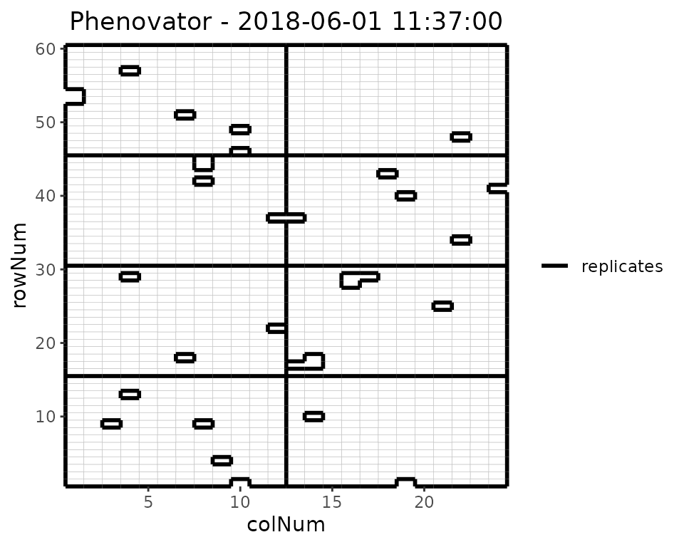
Here, the third time point is displayed which corresponds to the
1st of June 2018 at 11:37. Note that the title can be
manually changed using the title option. This plot can be
extended by highlighting interesting genotypes in the layout. Hereafter
the check genotypes are highlighted:
## Plot the layout for the third time point with the check genotypes highlighted.
plot(phenoTP,
plotType = "layout",
timePoints = 3,
highlight = c("check1", "check2", "check3", "check4"))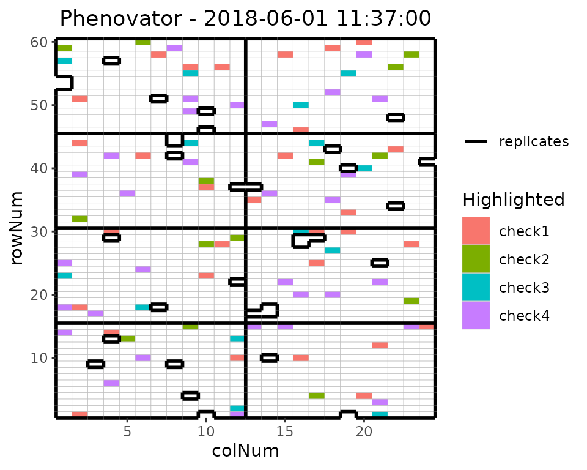
It is possible to add the labels of the genotypes to the layout.
## Plot the layout for the third time point.
plot(phenoTP,
plotType = "layout",
timePoints = 3,
highlight = c("check1", "check2", "check3", "check4"),
showGeno = TRUE)
We can visualize the raw data of a given trait on the layout, as a heatmap. This type of plot gives a first indication of the spatial variability at a given time point. This can be further investigated with the spatial modeling.
## Plot the layout for the third time point.
plot(phenoTP,
plotType = "layout",
timePoints = 3,
traits = "EffpsII")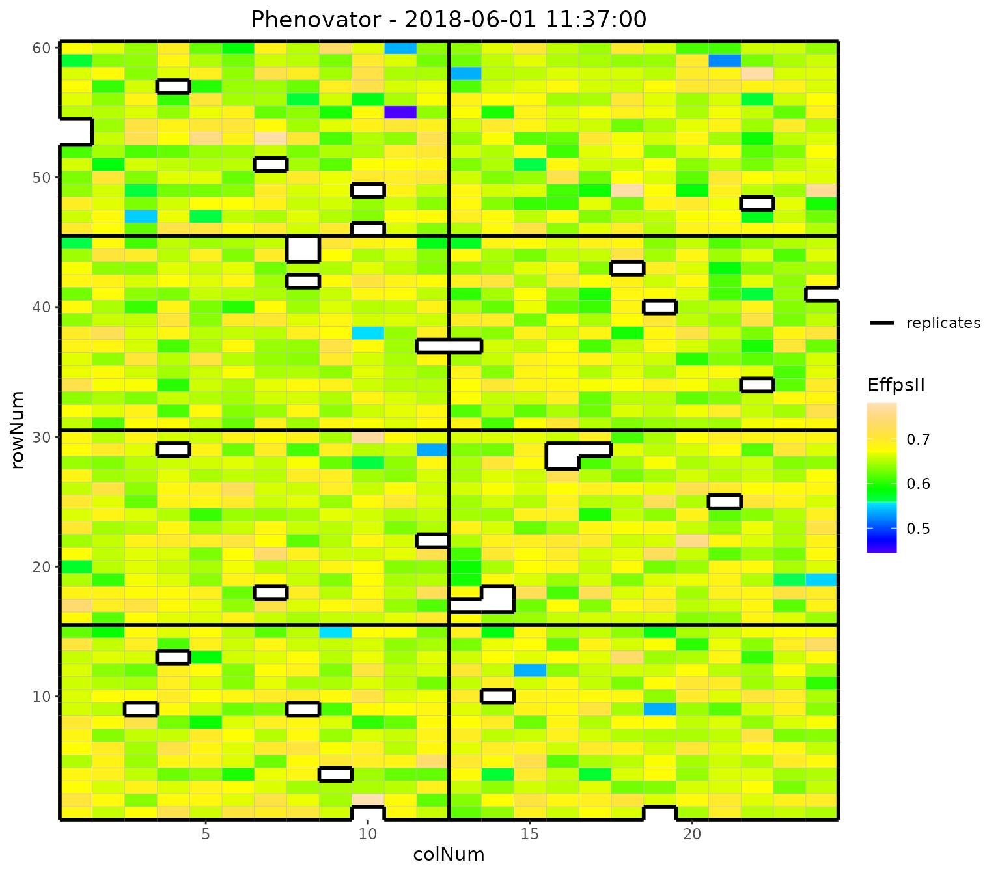
Raw data plot
Raw data can be displayed per genotype with one color per plotId.
## Create the raw data time courses for three genotypes.
plot(phenoTP,
traits = "EffpsII",
plotType = "raw",
genotypes = c("G001", "G002", "check1"))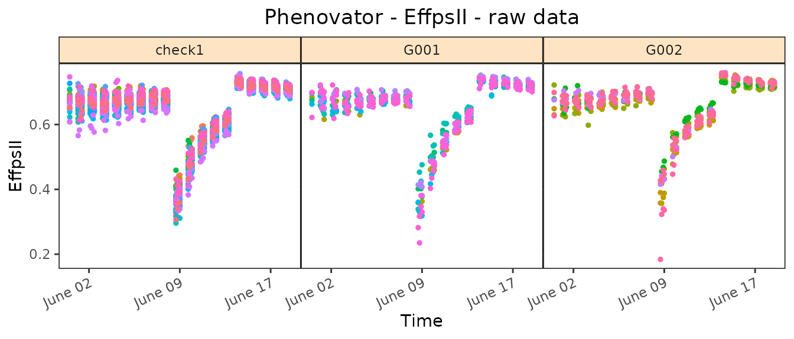
Boxplot
Boxplots can be made to visually assess the variability of the
trait(s) in the TP object. By default a box is plotted per
time point for the specified trait using all time points.
## Create a boxplot for "EffpsII" using the default all time points.
plot(phenoTP,
plotType = "box",
traits = "EffpsII") 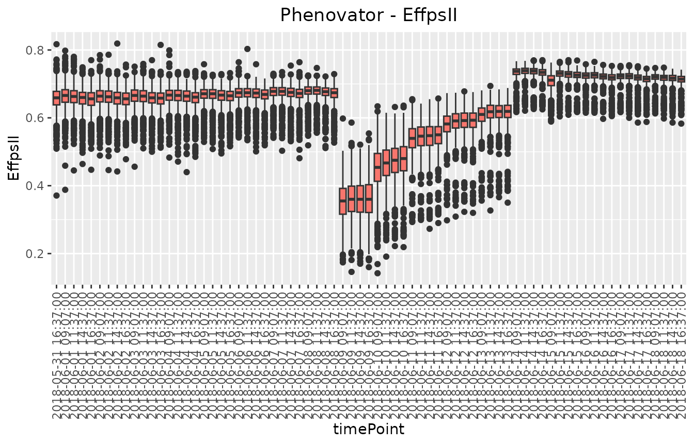
Correlation plot
Finally, a plot of the correlations between the observations in time for a specified trait can be made. The order of the plot is chronological and by default all time points are used.
## Create a correlation plot for "EffpsII" for a selection of time points.
plot(phenoTP,
plotType = "cor",
traits = "EffpsII",
timePoints = seq(from = 1, to = 73, by = 5))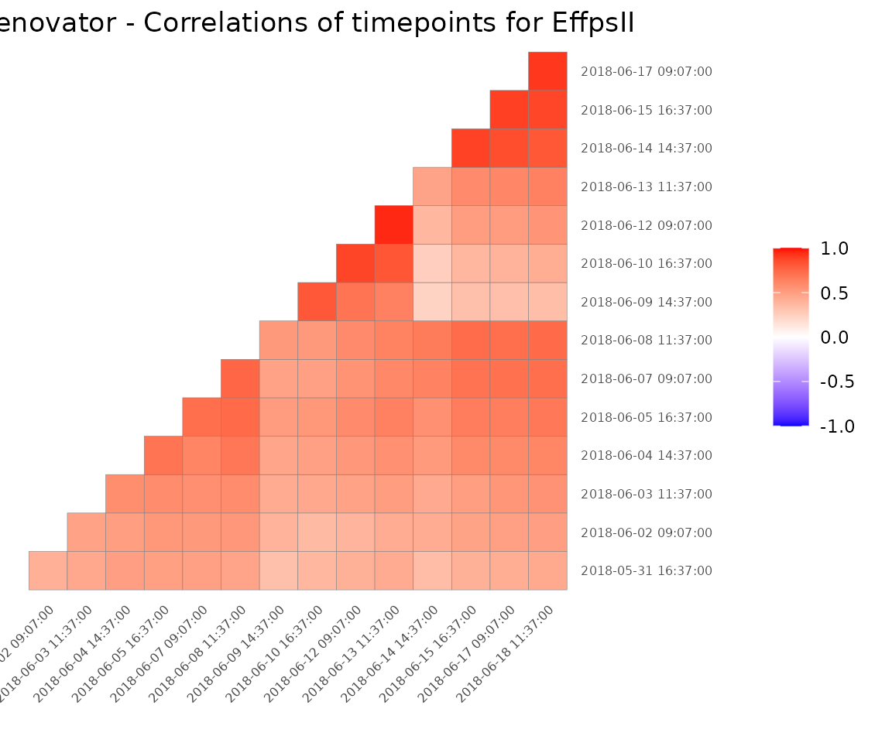
Outlier detection for single observations
Time courses of phenotypic data are viewed as continuous time-related functions. The first cleaning step consists of roughly checking the consistency of each point with its neighbors within a time course. Outlying single observations are measurements that do not follow the expected behavior at a given time. The detection of outlying observations is done “one time course after the other”.
Local regression is used to locally approximate the time courses by parametric functions. First a local regression is fitted at a set of points, then the fit is interpolated to other points. A confidence interval can then be calculated. Points outside this interval will be annotated as outliers.
# First select a subset of plants, for example here 4 plants.
plantSel <- c("c1r17","c13r17","c6r51","c21r24")
# Then run on the subset
resuVatorHTP <- detectSingleOut(TP = phenoTP,
trait = "EffpsII",
plotIds = plantSel,
confIntSize = 3,
nnLocfit = 0.1)| plotId | timePoint | EffpsII | yPred | sd_yPred | lwr | upr | outlier |
|---|---|---|---|---|---|---|---|
| c13r17 | 2018-06-03 09:07:00 | 0.751 | 0.6852574 | 0.0389194 | 0.5684992 | 0.8020156 | 0 |
| c13r17 | 2018-06-03 11:37:00 | 0.538 | 0.6833963 | 0.0255016 | 0.6068916 | 0.7599011 | 1 |
| c13r17 | 2018-06-03 14:37:00 | 0.737 | 0.7045487 | 0.0342136 | 0.6019078 | 0.8071896 | 0 |
| c13r17 | 2018-06-04 09:07:00 | 0.619 | 0.6330957 | 0.0436610 | 0.5021126 | 0.7640788 | 0 |
| c13r17 | 2018-06-04 11:37:00 | 0.711 | 0.6655915 | 0.0322765 | 0.5687620 | 0.7624211 | 0 |
| c13r17 | 2018-06-04 14:37:00 | 0.633 | 0.6861254 | 0.0330415 | 0.5870010 | 0.7852499 | 0 |
The predicted values and the confidence interval can be visualized
using the plot function.
plot(resuVatorHTP,
outOnly = FALSE)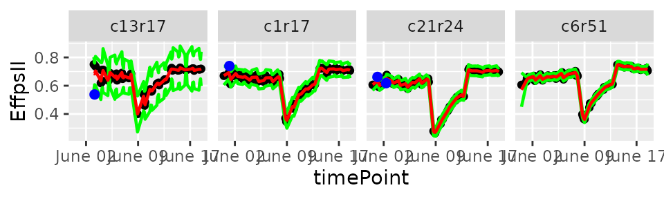
The annotated points can be replaced by NA for the studied trait
using the function removeSingleOut(). It creates a new
TP object.
phenoTPOut <- removeSingleOut(phenoTP,
resuVatorHTP)Correction for spatial trends
Phenotyping facilities display spatial heterogeneity. For example, the spatial variability of incident light can go up to 100% between pots within a greenhouse (Cabrera-Bosquet et al. 2016). Taking into account these spatial trends is a prerequisite for precise estimation of genetic and treatment effects. In the same way as in field trials, platform experiments should obey standard principles for experimental design and statistical modeling.
To get corrected values and genotypic predictions we want to
accurately separate the genetic effects from the spatial effects at each
time point. To do this, for each time point a spatial model is fitted
for the trait we are interested in. In statgenHTP spatial
models can either be fitted using SpATS (Rodríguez-Álvarez et al.
2018) and ASReml (Butler et al. 2017). This vignette
will focus on models fitted using SpATS. For models fitted using ASReml
see this
vignette.
Spatial model using SpATS
When SpATS is used for modeling, an extra spatial term is included in
the model. This spatial component is composed using the
PSANOVA function in the SpATS package which uses
2-dimensional smoothing with P-splines as described in Lee, Durbán, and Eilers (2013) and in Rodríguez-Álvarez et al. (2018).
In the example below the model is fitted for a few points.
Model plots
Several types of plots can be made for fitted models. A spatial plot consists of spatial plots of the raw data, fitted values, residuals and either BLUEs or BLUPs, and a histogram of the BLUEs or BLUPs. When SpATS is used for modeling an extra plot with the fitted spatial trend is included.
plot(modPhenoSp,
timePoints = 36,
plotType = "spatial",
spaTrend = "percentage")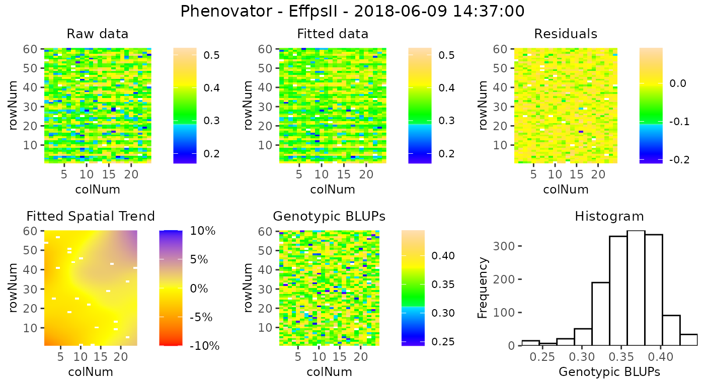
It is also possible to create a time lapse of the ratio of spatial trends over time. The scale is the same as previously described. The time lapse is always written to an output file.
plot(modPhenoSp,
plotType = "timeLapse",
outFile = "TimeLapse_modPhenoSp.gif")In the rawPred plot the raw data (colored dots, one color per plotId) is plotted overlaid with the predicted values (black dots) from the fitted model.
Note: The model has been fitted on a limited number of time points, which is reflected in the plots. For plots using more time point see this vignette.
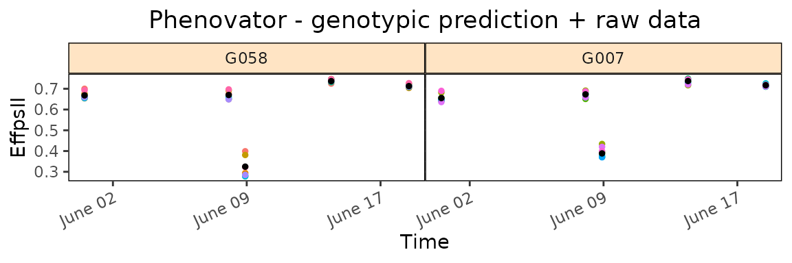
In the corrPred plot the corrected data (colored dots, one color per plotId) is plotted overlaid with the predicted values (black dots) from the fitted model.
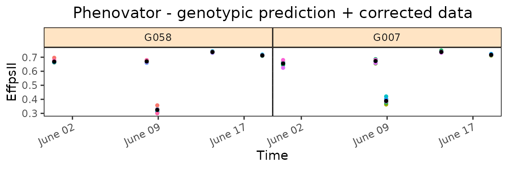
The last three types of plot display different model parameters over time. Plot type herit plots the heritability over time.
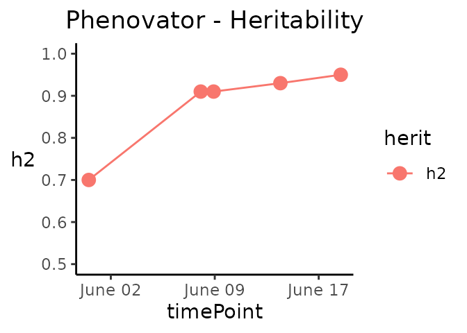
Plot type variance plots the residual, column and row variances over time. These plots can serve as diagnostics of the experiment.
plot(modPhenoSp,
plotType = "variance")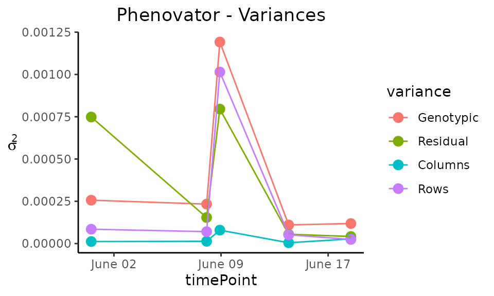
Plot type effDim plots the effective dimension from models fitted using SpATS over time.
plot(modPhenoSp,
plotType = "effDim",
whichED = c("colId", "rowId", "fColRow","colfRow", "surface"),
EDType = "ratio")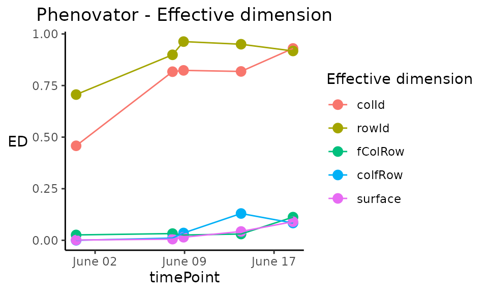
Extracting model results
All results that can be extracted are shown in the table below. The first column contains the function names. The second column contains a short description of the result that will be extracted and, where needed, states for which modeling engines it can be extracted.
| FUNCTION | DESCRIPTION |
|---|---|
| getGenoPred() | Best Linear Unbiased Predictions (BLUPS, genotype as random) or Estimators (BLUEs, genotype as fixed) |
| getCorrected() | Spatially corrected values at the experimental unit level |
| getVar() | Variance components |
| getHerit() | Generalized heritabilities - only when genotype is random |
| getEffDims() | Effective dimensions - only for SpATS engine |
## Extract the genotypic predictions for one time point:
genoPredSp <- getGenoPred(modPhenoSp)| timeNumber | timePoint | genotype | predicted.values | standard.errors |
|---|---|---|---|---|
| 1 | 2018-05-31 16:37:00 | check1 | 0.6708932 | 0.0050545 |
| 1 | 2018-05-31 16:37:00 | check2 | 0.5811530 | 0.0068930 |
| 1 | 2018-05-31 16:37:00 | check3 | 0.6432175 | 0.0067430 |
| 1 | 2018-05-31 16:37:00 | check4 | 0.6808257 | 0.0049853 |
| 1 | 2018-05-31 16:37:00 | G001 | 0.6706490 | 0.0089158 |
| 1 | 2018-05-31 16:37:00 | G002 | 0.6640368 | 0.0089164 |
Outlier detection for series of observations
After correcting the data for spatial trends, we can now check if the data contains outliers for series of observations. We do this by modeling each time course using a non-parametric smoothing spline with a fixed number of knots. The estimates for the spline coefficients are then extracted per time course (typically per plant) and correlations between those coefficient vectors are calculated to identify outlying time courses, i.e., plants.
The function fitSpline() fits a P-spline per plant for
the selected trait. The function output contains the
P-spline model coefficients and the values predicted on a dense grid
using the P-spline model coefficients.
data(spatCorrectedVator)
# Fit P-splines using on a subset of genotypes.
subGenoVator <- c("G160", "G151")
fit.spline <- fitSpline(inDat = spatCorrectedVator,
trait = "EffpsII_corr",
genotypes = subGenoVator,
knots = 50,
useTimeNumber = TRUE,
timeNumber = "timeNumHour")
# Extracting the tables of predicted values and P-spline coefficients
predDat <- fit.spline$predDat
coefDat <- fit.spline$coefDatWe can then visualize the P-spline predictions and first derivatives for a subset of genotypes or for a subset of plots.
plot(fit.spline,
genotypes = "G160")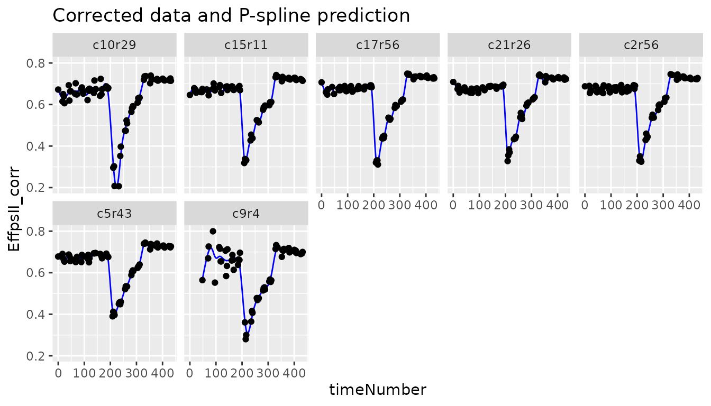
The coefficients are then used to tag suspect time courses with the
function detectSerieOut().
outVator <- detectSerieOut(corrDat = spatCorrectedVator,
predDat = predDat,
coefDat = coefDat,
trait = "EffpsII_corr",
genotypes = subGenoVator,
thrCor = 0.9,
thrPca = 30)| plotId | genotype | reason | value |
|---|---|---|---|
| c21r25 | G151 | mean corr | 0.7620638 |
| c21r25 | G151 | angle | 39.8776276 |
| c9r4 | G160 | mean corr | 0.6778041 |
| c9r4 | G160 | angle | 47.3176970 |
| c9r4 | G160 | slope | 0.6046173 |
Visualizing the results we see that for genotype G151 plant c21r25 is tagged as outlier:
plot(outVator, genotypes = "G151")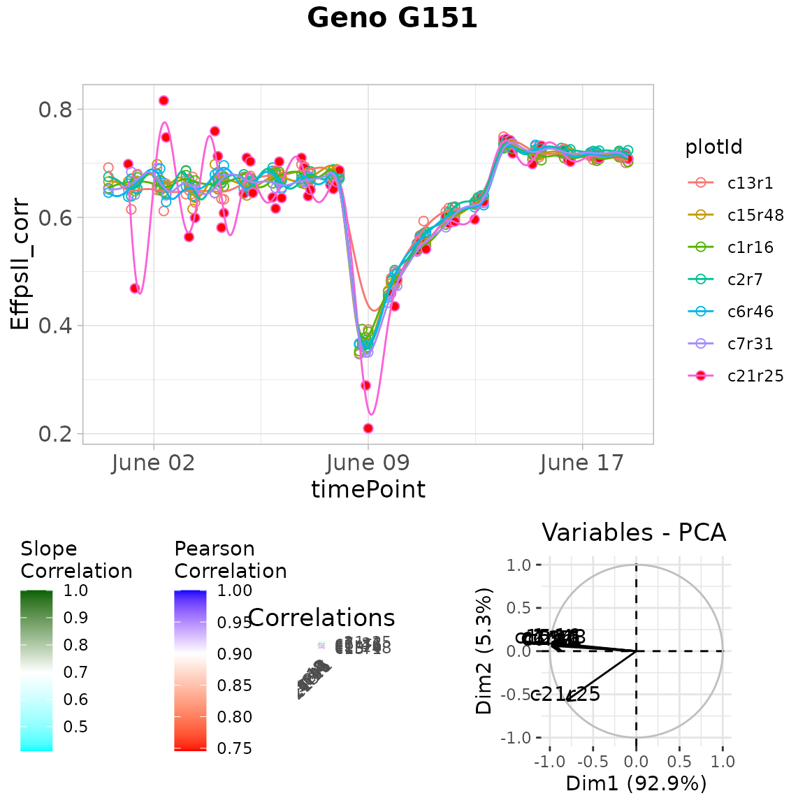
We can then remove the outlying plants from the data set or fitted spline.
fit.splineOut <- removeSerieOut(fitSpline = fit.spline,
serieOut = outVator)Modeling the genetic signal
This section presents the second stage of the two-stage approach proposed by Pérez-Valencia et al. (2022). The aim is modeling the temporal evolution of the genetic signal after a spatial correction is performed on a phenotypic trait. Data consist of time-series (curves) of a (possibly) spatially corrected plant/plot phenotype. We assume that data present a hierarchical structure with plots nested in genotypes, and genotypes nested in “populations”. To model this sample of curves an additive decomposition of the phenotypic variation over time is considered, and a P-spline-based three-level nested hierarchical data model (hereafter refer as psHDM) is used.
To illustrate the analysis, we use the Arabidopsis data corrected for
spatial trends, spatCorrectedVator. For simplicity, we will
assume one population (pop) and two genotypes (genotypes in
subGenoVator). The data structure and the new “population”
variable are as follows
data(spatCorrectedVator)
spatCorrectedVator[["pop"]] <- as.factor(rep("Pop1", nrow(spatCorrectedVator)))
str(droplevels(spatCorrectedVator[spatCorrectedVator$genotype %in% subGenoVator,]))
#> 'data.frame': 995 obs. of 14 variables:
#> $ timeNumber : int 1 1 1 1 1 1 1 1 1 1 ...
#> $ timePoint : POSIXct, format: "2018-05-31 16:37:00" "2018-05-31 16:37:00" ...
#> $ EffpsII_corr: num 0.666 0.654 0.646 0.692 0.675 ...
#> $ EffpsII : num 0.663 0.655 0.655 0.706 0.672 0.649 0.692 0.67 0.714 0.674 ...
#> $ wt : num 36 36 36 36 36 ...
#> $ genotype : Factor w/ 2 levels "G151","G160": 1 1 1 1 1 1 2 2 2 2 ...
#> $ check : Factor w/ 1 level "noCheck": 1 1 1 1 1 1 1 1 1 1 ...
#> $ repId : Factor w/ 7 levels "1","2","3","4",..: 7 2 4 6 1 3 7 4 5 2 ...
#> $ Image_pos : Factor w/ 9 levels "1a","1b","1c",..: 3 1 7 8 5 4 2 2 7 8 ...
#> $ rowId : Factor w/ 13 levels "1","4","7","11",..: 12 5 11 1 3 9 13 13 7 8 ...
#> $ colId : Factor w/ 11 levels "1","2","5","6",..: 9 1 4 8 2 5 10 2 11 7 ...
#> $ plotId : Factor w/ 14 levels "c10r29","c13r1",..: 4 6 11 2 9 12 5 8 7 1 ...
#> $ timeNumHour : num 0 0 0 0 0 0 0 0 0 0 ...
#> $ pop : Factor w/ 1 level "Pop1": 1 1 1 1 1 1 1 1 1 1 ...We will use the spatially corrected photosystem II efficiency
(EffpsII_corr) as response variable. We assume that plots
(plotId,
)
are nested in genotypes (genotype,
),
and genotypes are nested in populations (pop,
).
Furthermore, uncertainty is propagated from stage to stage using weights
(wt). Since we are in the context of longitudinal models,
it is natural that we use time as a covariate (i.e., the timepoints at
which the phenotype of interest was measured,
timeNumber = timeNumHour)
Model fitting
To fit the psHDM model, we use the
fitSplineHDM() function with cubic (bdeg
)
B-spline basis functions with nseg
segments, and second order penalties
(pord)
to represent functions at the three levels of the hierarchy (population,
genotype and plot).
## Fit P-spline HDM.
fit.psHDM <- fitSplineHDM(inDat = spatCorrectedVator,
genotypes = subGenoVator,
trait = "EffpsII_corr",
useTimeNumber = TRUE,
timeNumber = "timeNumHour",
pop = "pop",
genotype = "genotype",
plotId = "plotId",
weights = "wt",
difVar = list(geno = FALSE, plot = FALSE),
smoothPop = list(nseg = 20, bdeg = 3, pord = 2),
smoothGeno = list(nseg = 20, bdeg = 3, pord = 2),
smoothPlot = list(nseg = 20, bdeg = 3, pord = 2),
trace = FALSE)The resulting object, in this case fit.psHDM, contains
different information about the data structure, the fitting process, and
three data frames with the estimated curves at each of the three-levels
of the hierarchy (explore fit.psHDM$popLevel,
fit.psHDM$genoLevel, and fit.psHDM$plotLevel).
That is, it contains the estimated trajectories and deviations, as well
as their first and second-order derivatives. For a detailed description
of the returned values see help(fitSplineHDM). All these
curves can be used as input to extract time‐independent parameters to
characterise genotypes (as illustrated in the final section of this
vignette).
Model prediction
The predict.psHDM() function can be used to obtain
predictions from a fitted psHDM model (obtained using
the fitSplineHDM() function; see above). In particular,
this function allows obtaining predictions (estimated curves at each
level of the hierarchy) on a dense grid of time points. Also, it allows
the calculation of standard errors. These standard errors can be used to
construct (approximate) pointwise confidence intervals for the estimated
curves.
In the following code, we use the fit.psHDM object to
make predictions at the three levels of the hierarchy
(pred = list(pop = TRUE, geno = TRUE, plot = TRUE)), and to
obtain standard errors at the population and genotype levels
(se = list(pop = TRUE, geno = TRUE, plot = FALSE)). The
original data is measured at
time points, but predictions are obtained at
time points in the same range than the original time points (argument
newtimes).
## Predict P-spline HDM.
pred.psHDM <- predict(object = fit.psHDM,
newtimes = seq(min(fit.psHDM$time[["timeNumber"]]),
max(fit.psHDM$time[["timeNumber"]]),
length.out = 100),
pred = list(pop = TRUE, geno = TRUE, plot = TRUE),
se = list(pop = TRUE, geno = TRUE, plot = FALSE),
trace = FALSE)As result, three data frames with predictions (and standard errors)
at population (pred.psHDM$popLevel), genotype
(pred.psHDM$GenoLevel) and plot
(pred.psHDM$plotLevel) levels are returned.
Model plot
The plot.psHDM() function plots psHDM
objects. We note that objects of class psHDM can be
obtained using both fitSplineHDM() and
predict.psHDM() functions. In both cases, the resulting
object contains information about estimated trajectories, deviations and
first-order derivatives at the three levels of the hierarchy. As such,
plots of these curves can be obtained. In addition, when plots are
obtained from an object obtained using the predict.psHDM()
function,
pointwise confidence intervals are also depicted.
To illustrate the usage of function plot.psHDM(), we use
here the object pred.psHDM obtained in the prediction
section.
- If
plotType = "popTra", the estimated population trajectory () is depicted and its pointwise confidence intervals. Additionally, the grey lines represent the observedtraitthat is used in thefitSplineHDMfunction.
plot(pred.psHDM, plotType = "popTra", themeSizeHDM = 10)- If
plotType = "popGenoTra", estimated population () and genotype-especific () trajectories are depicted for all genotypes. pointwise confidence intervals are depicted for the population trajectory. We let the user explore the plot for the first-order derivative of the estimated population and genotype trajectories (plotType = "popGenoDeriv").
plot(pred.psHDM, plotType = "popGenoTra", themeSizeHDM = 10)- If
plotType = "GenoDev", estimated genotype-specific deviations () are depicted for all genotypes.
plot(pred.psHDM, plotType = "genoDev", themeSizeHDM = 10)
Finally, if we are interested in obtaining plots at the plot level,
we use plotType = "genoPlotTra". Here, estimated genotype
()
and plot-specific
()
trajectories are depicted for all plots separately for a selection of
genotypes. Also,
pointwise confidence intervals are depicted for the estimated
genotype-specific trajectories.
plot(pred.psHDM,
plotType = "genoPlotTra",
themeSizeHDM = 10)Estimation of parameters from time courses
The final step in the HTP data analysis is extracting interesting parameters from the modeled time courses. The parameters can then be further analyzed, for example in a GxE analysis (see statgenGxE), or a genetic analysis (see statgenGWAS). Note that timeMin and timeMax should be specified at the time scale used when fitting the spline, in this case the time number scale.
paramVator1 <- estimateSplineParameters(x = fit.splineOut,
estimate = "predictions",
what = "AUC",
timeMin = 330,
timeMax = 432,
genotypes = subGenoVator)
plot(paramVator1, plotType = "box")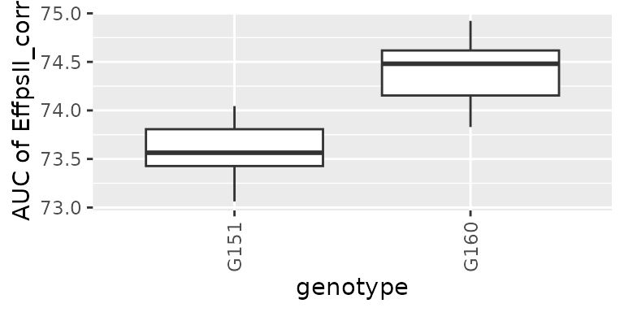
These parameters can also be obtained from estimated time courses after the genetic signal is modeled with the psHDM model. For example, we can extract the minimum spatially corrected photosystem II efficiency (from previously estimated plot trajectories), for two genotypes (as illustration).
paramVator2 <-
estimateSplineParameters(x = pred.psHDM,
what = "min",
fitLevel = "plot",
estimate = "predictions")
plot(paramVator2, plotType = "box")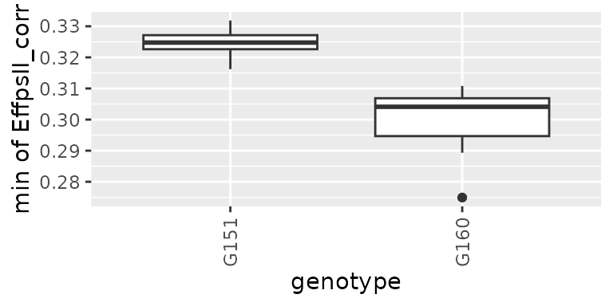